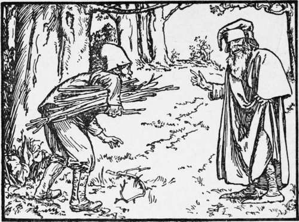
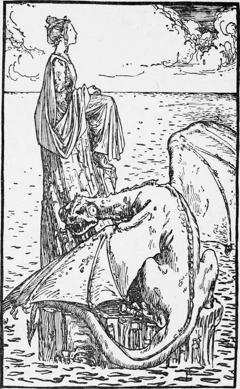

The Four Crafts-Men
Description
This section is from the book "Household Tales by Brothers Grimm", by Brothers Grimm. Also available from Amazon: Household Tales by Brothers Grimm.
The Four Crafts-Men
"Dear children," said a poor man to his four sons, "I have nothing to give you; you must go out into the wide world and try your luck. Begin by learning some craft or another, and see how you can get on." So the four brothers took their walking-sticks in their hands, and their little bundles on their shoulders, and after bidding their father good-bye, went all out at the gate together. When they had got on some way they came to four cross-ways, each leading to a different country. Then the eldest said, " Here we must part; but this day four years we will come back to this spot, and in the meantime each must try what he can do for himself."
So each brother went his way; and as the eldest was hastening on a man met him, and asked him where he was going, and what he wanted. " I am going to try my luck in the world, and should like to begin by learning some art or trade," answered he. "Then," said the man, "go writh me, and I will teach you how to become the cunningest thief that ever was." "No," said the other, " that is not an honest calling, and what can one look to earn by it in the end but the gallows ? " " Oh! " said the man, " you need not fear the gallows; for I will only teach you to steal what will be fair game: I meddle with nothing but what no one else can get or care anything about, and where no one can find you out." So the young man agreed to follow his trade, and he soon showed himself so clever, that nothing could escape him that he had once set his mind upon.
The second brother also met a man, who, when he found out what he was setting out upon, asked him what craft he meant to follow. "I do not know yet," said he. "Then come with me, and be a star-gazer. It is a noble art, for nothing can be hidden from you, when once you understand the stars." The plan pleased him much, and he soon became such a skilful star-gazer, that when he had served out his time, and wanted to leave his master, he gave him a glass, and said, " With this you can see all that is passing in the sky and on earth, and nothing can be hidden from you."
The third brother met a huntsman, who took him with him, and taught him so well all that belonged to hunting, that he became very clever in the craft of the woods; and when he left his master he gave him a bow, and said, "Whatever you shoot at with this bow you will be sure to hit."
The youngest brother likewise met a man who asked him what he wished to do. " Would not you like," said he, " to be a tailor?" "Oh, no! " said the young man;
"sitting cross-legged from morning to night, working backwards and forwards with a needle and goose, will never suit me." "Oh!" answered the man, "that is not my sort of tailoring; come with me, and you will learn quite another kind of craft from that." Not knowing what better to do, he came into the plan, and learnt tailoring from the beginning; and when he left his master, he gave him a needle, and said, "you can sew anything with this, be it as soft as an egg or as hard as steel; and the joint will be so fine that no seam will be seen."
After the space of four years, at the time agreed upon, the four brothers met at the four cross-roads; and having welcomed each other, set off towards their father's home, where they told him all that had happened to them, and how each had learned some craft.
Then, one day, as they were sitting before the house under a very high tree, the father said, "I should like to try what each of you can do in this way." So he looked up, and said to the second son, "At the top of this tree there is a chaffinch's nest; tell me how many eggs there are in it." The star-gazer took his glass, looked up, and said, "Five." " Now," said the father to the eldest son, "take away the eggs without letting the bird that is sitting upon them and hatching them know anything of what you are doing." So the cunning thief climbed up the tree, and brought away to his father the five eggs from under the bird; and it never saw or felt what he was doing, but kept sitting on at its ease. Then the father took the eggs, and put one on each corner of the table, and the fifth in the middle; and said to the huntsman, " Cut all the eggs in two pieces at one shot." The huntsman took up his bow, and at one shot struck all the five eggs as his father wished. "Now comes your turn," said he to the young tailor; " sew the eggs and the young birds in them together again, so neatly that the shot shall have done them no harm." Then the tailor took his needle, and sewed the eggs as he was told; and when he had done, the thief was sent to take them back to the nest, and put them under the bird without its knowing it. Then she went on sitting, and hatched them: and in a few days they crawled out, and had only a little red streak across their necks, where the tailor had sewn them together.
Princess and the Dragon.
" Well done, sons! " said the old man: " you have made good use of your time, and learnt something worth the knowing; but I am sure I do not know which ought to have the prize. Oh! that a time might soon come for you to turn your skill to some account! "
Not long after this there was a great bustle in the country; for the king's daughter had been carried off by a mighty dragon, and the king mourned over his loss day and night, and made it known that whoever brought her back to him should have her for a wife. Then the four brothers said to each other, "Here is a chance for us; let us try what we can do." And they agreed to see whether they could not set the princess free. "I will soon find out where she is, however," said the star-gazer, as he looked through his glass: and he soon cried out, "I see her afar off, sitting upon a rock in the sea; and I can spy the dragon close by, guarding her." Then he went to the king, and asked for a ship for himself and his brothers; and they sailed together over the sea, till they came to the right place. There they found the princess sitting, as the star-gazer had said, on the rock; and the dragon was lying asleep, with his head upon her lap. " I dare not shoot at him," said the huntsman, " for I should kill the beautiful young lady also." "Then I will try my skill," said the thief; and went and stole her away from under the dragon, so quietly and gently that the beast did not know it, but went on snoring.
Then away they hastened with her full of joy in their boat towards the ship; but soon came the dragon roaring behind them through the air; for he awoke and missed the princess. But when he got over the boat, and wanted to pounce upon them and carry off the princess, the huntsman took up his bow and shot him straight through the heart, so that he fell down dead. They were still not safe; for he was such a great beast that in his fall he overset the boat, and they had to swim in the open sea upon a few planks. So the tailor took his needle, and with a few large stitches put some of the planks together; and he sat down upon these, and sailed about and gathered up all the pieces of the boat; and then tacked them together so quickly that the boat was soon ready, and they then reached the ship and got home safe.
When they had brought home the princess to her father, there was great rejoicing; and he said to the four brothers, "One of you shall marry her, but you must settle amongst yourselves which it is to be." Then there arose a quarrel between them; and the star-gazer said, " If I had not found the princess out, all your skill would have been of no use; therefore she ought to be mine." "Your seeing her would have been of no use," said the thief, " if I had not taken her away from the dragon; therefore she ought to be mine." "No, she is mine," said the huntsman; "for if I had not killed the dragon, he would, after all, have torn you and the princess into pieces." "And if I had not sewn the boat together again," said the tailor, "you would all have been drowned; therefore she is mine." Then the king put in a word, and said, "Each of you is right; and as all cannot have the young lady, the best way is for neither of you to have her: for the truth is, there is somebody she likes a great deal better. But to make up for your loss, I will give each of you, as a reward for his skill, half a kingdom." So the brothers agreed that this plan would be much better than either quarrelling or marrying a lady who had no mind to have them. And the king then gave to each half a kingdom, as he had said; and they lived very happily the rest of their days, and took good care of their father; and somebody took better care of the young lady, than to let either the dragon or one of the Crafts-men have her again
Continue to:
- prev: Snow-Drop. Continued
- Table of Contents
- next: Cat-Skin
Tags
fairy tales, children's stories, brothers grimm, household tales